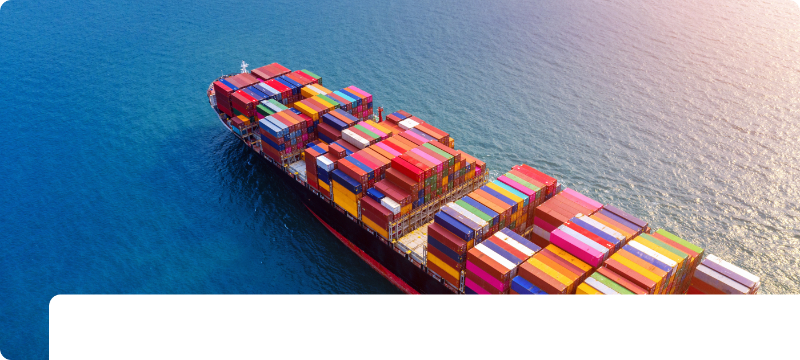
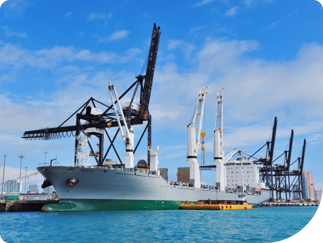
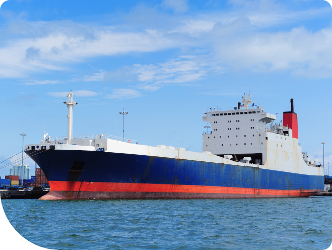
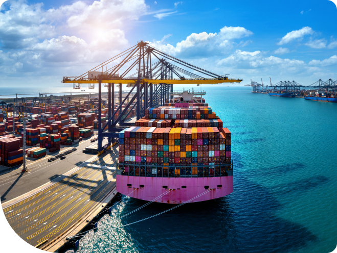

- 냉동운반선 전용 냉각 플랜트를 공급합니다
- 한국마이콤 냉동기 엔지니어링의 식품, 음료 사업부는 최적의 온도 관리 솔루션을 제공합니다. 원자재 입고부터 완제품 출하까지 전 공정에 정밀한 온도 제어 기술을 적용하여 식품의 품질과 안전을 보장합니다. 히트 펌프, 에어 커튼 등 첨단 열 엔지니어링 기술을 통해 에너지 효율성을 높이고, 고객사의 생산성을 향상시킵니다. 다양한 식품 가공 공정에 맞는 맞춤형 냉동 솔루션으로 식품 산업의 혁신을 선도합니다.
-

- 01
- 다양한 선박 운영 환경에 최적화된
신뢰할 수 있는 냉장 솔루션을 제공합니다. - 한국마이콤은 전문 리퍼 캐리어 시장에서 광범위한 냉장 장비를 공급하며 부패성 화물 무역의 급증하는 수요에 선제적으로 대응해왔습니다. 혁신적인 전문 리퍼 캐리어 개발에 대한 끝없는 열정과 함께, 전 세계 지사 네트워크를 통해 고객 맞춤형 서비스를 제공하는 글로벌 기업으로 자리매김하였습니다. 특히 신선식품의 국제 물류에서의 온도 변화와 품질 저하 문제를 근본적으로 해결할 수 있는 첨단 온도 제어 시스템을 연구개발하여, 글로벌 냉장 운송 시장의 새로운 패러다임을 제시하고 있습니다.
-

- 02
- 최첨단 압축기 기술로 부패성 화물의
신선도와 품질을 완벽하게 유지합니다 - 냉동식품 산업에서 최고의 품질 유지는 신뢰성 높고 뛰어난 성능의 환경 친화적 냉장 시스템 없이는 불가능합니다. 이러한 핵심적인 산업적 요구를 정확히 이해하고, 한국마이콤은 에너지 효율성을 극대화한 왕복 및 스크류 압축기 기반의 다양한 시스템과 장비 라인업을 꾸준히 개발해왔습니다. 고객의 다양한 니즈를 반영한 맞춤형 냉장 솔루션 개발에 집중하며, 기존 시스템 대비 20% 이상의 에너지 절감을 실현하는 혁신적인 기술력으로 글로벌 시장에서 경쟁력을 확보하고 있습니다.
-

- 03
- PSA 질소가스 발생 시스템으로
가연성 가스화물의 안전한 운송을 보장합니다 - 한국마이콤은 해양 시장에서 LPG 및 화학 탱커를 위한 PSA(Pressure Swing Adsorption) 질소 발생 시스템을 주력 제품으로 선보입니다. 특수 페놀 수지로 제작된 새로운 탄산염 흡수제를 통해, 이 시스템은 해양 응용 분야에 최적화된 성능을 발휘합니다. 특히 낮은 전기 소비량과 컴팩트한 디자인, 탁월한 소음 감소 기술을 동시에 구현하여 해양 산업의 까다로운 요구조건을 완벽하게 충족시킵니다. 더불어 극한의 해양 환경에서도 안정적인 질소 공급을 보장하며, 선박의 안전성과 효율성을 동시에 높이는 혁신적인 솔루션으로 국제 해운 시장에서 주목받고 있습니다.